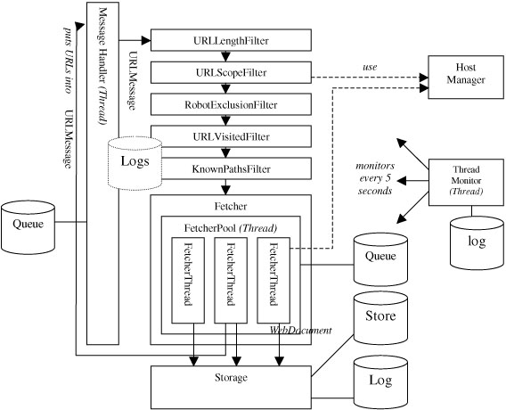

|
About
Resources
Plans
Download
Jakarta
|
|
The LARM Web Crawler - Technical Overview
|
Author: Clemens Marschner
Revised: Oct. 28, 2002
This document describes the configuration parameters and the inner
workings of the LARM web crawler.
|
Purpose and Intended Audience
|
This document was made for Lucene developers, not necessarily with any
background knowledge on crawlers, to understand the inner workings of
the LARM crawler, the current problems and some directions for future
development. The aim is to keep the entry costs low for people who have
an interest in developing this piece of software further.
It may also serve for actual users of the Lucene engine, but beware,
since there is a lot that will change in the near future, especially the
configuration.
|
|
|
|
|
Introduction
|
|
Why web crawlers at all?
|
Web crawlers became necessary because the web standard protocols didn't
contain any mechanisms to inform search engines that the data on a web
server had been changed. If this were possible, a search engine could
be notified in a "push" fashion, which would simplify the total process
and would make indexes as current as possible.
Imagine a web server that notifies another web server that a link was
created from one of its pages to the other server. That other server
could then send a message back if the page was removed.
On the other hand, handling this system would be a lot more
complicated. Keeping distributed information up to date is an erroneous task. Even
in a single relational database it is often complicated to define and
handle dependencies between relations. Should it be possible to allow
inconsistencies for a short period of time? Should dependent data be
deleted if a record is removed? Handling relationships between clusters of
information well incorporates a new level of complexity.
In order to keep the software (web servers and browsers) simple, the
inventors of the web concentrated on just a few core elements - URLs for
(more or less) uniquely identifying distributed information, HTTP for
handling the information, and HTML for structuring it. That system was
so simple that one could understand it in a very short time. This is
probably one of the main reasons why the WWW became so popular. Well,
another one would probably be coloured, moving graphics of naked people.
But the WWW has some major disadvantages: There is no single index of
all available pages. Information can change without notice. URLs can
point to pages that no longer exist. There is no mechanism to get "all"
pages from a web server. The whole system is in a constant process of
change. And after all, the whole thing is growing at phenomenal rates.
Building a search engine on top of that is not something you can do on a
Saturday afternoon. Given the sheer size, it would take months to search
through all the pages in order to answer a single query, even if we had
a means to get from server to server, get the pages from there, and
search them. But we don't even know how to do that, since we don't know
all the web servers.
That first problem was addressed by bookmark collections, which soon
became very popular. The most popular probably was Yahoo, which evolved
to one of the most popular pages in the web just a year after it emerged
from a college dorm room.
The second problem was how to get the information from all those pages
laying around. This is where a web crawler comes in.
Ok, those engineers said, we are not able to get a list of all the
pages. But almost every page contains links to other pages. We can save a
page, extract all the links, and load all of these pages these links
point to. If we start at a popular location which contains a lot of links,
like Yahoo for example, chances should be that we can get "all" pages
on the web.
A little more formal, the web can be seen as a directional graph, with
pages as nodes and links as edges between them. A web crawler, also
called "spider" or "fetcher", uses the graph structure of the web to get
documents in order to be able to index them. Since there is no "push"
mechanism for updating our index, we need to "pull" the information on
our own, by repeatedly crawling the web.
|
|
|
Implementation - the first attempt
|
"Easy", you may think now, "just implement what he said in the
paragraph before." So you start getting a page, extracting the links, following
all the pages you have not already visited. In Perl that can be done in
a few lines of code.
But then, very soon (I can tell you), you end up in a lot of problems:
- a server doesn't respond. Your program always wait for it to time
out
- you get OutOfMemory errors soon after the beginning
- your hard drive fills up
- You notice that one page is loaded again time after time,
because the URL changed a little
- Some servers will behave very strange. They will respond after
30 seconds, sometimes they time out, sometimes they are not accessible
at all
- some URLs will get longer and longer. Suddenly you will get
URLs with a length of thousands of characters.
- But the main problem will be: you notice that your network
interface card (NIC) is waiting, and your CPU is waiting. What's going on?
The overall process will take days
|
|
|
Features of the LARM crawler
|
The LARM web crawler is a result of experiences with the errors as
mentioned above, connected with a lot of monitoring to get the maximum out
of the given system resources. It was designed with several different
aspects in mind:
- Speed. This involves balancing the resources to prevent
bottlenecks. The crawler is multi-threaded. A lot of work went in avoiding
synchronization between threads, i.e. by rewriting or replacing the standard
Java classes, which slows down multi-threaded programs a lot
- Simplicity. The underlying scheme is quite modular and
comprehensible. See the description of the pipeline below
- Power. The modular design and the ease of the Java language makes
customisation simple
- Scalability. The crawler was supposed to be able to crawl large
intranets with hundreds of servers and hundreds of thousands of
documents within a reasonable amount of time. It was not meant to be
scalable to the whole Internet.
- Java. Although there are many crawlers around at the time when I
started to think about it (in Summer 2000), I couldn't find a good
available implementation in Java. If this crawler would have to be integrated
in a Java search engine, a homogeneous system would be an advantage. And
after all, I wanted to see if a fast implementation could be done in
this language.
|
|
|
What the crawler can do for you, and what it cannot (yet)
|
What it can do for you:
- Crawl a distinct set of the web, only restricted by a given regular
expression all pages have to match. The pages are saved into page files
of max. 50 MB (look at FetcherMain.java for details) and an index file
that contains the links between the URL and the position in the page
file. Links are logged as well. This is part of the standard LogStorage.
Other storages exist as well (see below)
- Crawling is done breadth first. Hosts are accessed in a round-robin
manner, to prevent the situation that all threads access one host at
once. However, at the moment there is no means to throttle access to a
server - the crawler works as fast as it can. There are also some
problems with this technique, as will be described below.
- The main part of the crawler is implemented as a pool of concurrent
threads, which speeds up I/O access
- The HTML link extractor has been optimised for speed. It was made
10 x faster than a generic SAX parser implementation
- A lot of logging and monitoring is done, to be able to track down
the going-ons in the inside
- A lot of parts of the crawler have already been optimised to
consume not more memory then needed. A lot of the internal queues are cached
on hard drive, for example. Only the HashMap of already crawled pages
and the HostInfo structures still completely remain in memory, thus
limiting the number of crawled hosts and the number of crawled pages. At
the moment, OutOfMemory errors are not prevented, so beware.
- URLs are passed through a pipeline of filters that limit, for
example, the length of a URL, load robots.txt the first time a host is
accessed, etc. This pipeline can be extended easily by adding a Java
class to the pipeline.
- The storage mechanism is also pluggable. One of the next
issues would be to include this storage mechanism into the pipeline, to
allow a separation of logging, processing, and storage
On the other hand, at the time of this writing, the crawler has not yet
evolved into a production release. The reason is: until now, it just
served me alone.
These issues remain:
-
Still, there's a relatively high memory overhead per server and
also some overhead per page, especially since a map of already
crawled pages is held in memory at this time. Although some of the
in-memory structures are already put on disk, memory consumption is still
linear to the number of pages crawled. We have lots of ideas on how to
move that out, but since then, as an example with 500 MB RAM, the crawler
scales up to some 100.000 files on some 100s of hosts.
- It's not polite. It sucks out the servers, which can impose
DOS (Denial of Service) problems. We have plans to restrict concurrent
server accesses to only one, but that's not yet implemented.
- Only some of the configuration can be done with command line
parameters. The pipeline is put together in the startup procedure.
Configuration will be done from within an XML file in the future. We are
planning to use the Avalon framework for that.
- The ThreadMonitor is very experimental. It has evolved from a
pure monitoring mechanism to a central part of the whole crawler. It
should probably be refactored.
- Speed could still be optimized. Synchronization takes place
too often. At the moment URLs and documents are passed one after each
other. Should be changed such that groups of messages are passed in one
turn.
- The Lucene integration is pretty experimental, and also pretty
slow. It forms a major bottleneck if you use it.
- No processing whatsoever is done on the documents (except
extracting the links). It should be decided how much of this is supposed to
be done within the crawler, and what should be done in a post
processing step.
- Unix is the favoured operating system. I used a SUSE Linux
with 2.2 kernel. I remember that I ran into problems with the I/O routines
on Windows machines. I haven't tried it for a long time now, though.
- Only http is supported, no file server crawling with recurse
directory options, etc.
-
I noticed on high bandwidth (100 MBit/s) systems that very slowly
system sockets were eaten, although the Java code seemed to be ok.
|
|
|
Syntax and runtime behaviour
|
The command line options are very simple:
 |
|
|
|
java [-server] [-Xmx[ZZ]mb] -classpath fetcher.jar
de.lanlab.larm.fetcher.FetcherMain
[-start STARTURL | @STARTURLFILE]+
-restrictto REGEX
[-threads[=10]]
-hostresolver HOSTRES.PROPERTIES
|
|
|
|
|
- -start a start URL or, alternatively, a file with start URLs
(one in each line). In the latter case the file name must be preceded
by '@'. It must be a valid http-URL, including the http prefix
- -restrictto a (Perl5) regular expression that all URLs have
to obey. These regexes are performed on the normalized version of a URL
(see below). If you are not familiar with regular expressions, see
The Perl Man
Pages.
- -threads the number of concurrent threads that crawl the
pages. At this time, more than 25 threads don't provide any advantages
because synchronization effects and (probably) the overhead of the
scheduler slow the system down
Java runtime options:
- -server starts the hot spot VM in server mode, which starts
up a little slower, but is faster during the run. Recommended
- -Xmx<ZZ>mb sets the maximum size of the heap to
<ZZ> mb. Should be a lot. Set it to what you have.
You may also want to have a look at the source code, because some
options cannot be dealt with from the outside at this time.
Other options
Unfortunately, a lot of the options are still not configurable from the
outside. Most of them are configured from within FetcherMain.java.
However, others are still spread over some of the other classes. At this
time, we tried to put a "FIXME" comment around all these options, so
check out the source code.
What happens now?
- The filter pipeline is built. The ScopeFilter is initialised with
the expression given by restrictto
- The URL is put into the pipeline
- The documents are fetched. If the mime type is text/html, links are
extracted and put back into the queue. The documents and URLs are
forwarded to the storage, which saves them
- Meanwhile, every 5 seconds, the ThreadMonitor gathers statistics,
flushes log files, starts the garbage collection, and stops the fetcher
when everything seems to be done: all threads are idle, and nothing is
remaining in the queues
|
|
|
Normalized URLs
|
URLs are only supposed to make a web resource accessible. Unfortunately
there can be more than one representation of a URL, which can cause a
web crawler to save one file twice under different URLs. Two mechanisms
are used to reduce this error, while at the same time trying to keep
the second error (two URLs are regarded as pointing to the same file, but
are in fact two different ones):
- Common URL patterns are reduced to a known "canonical" form. I.
e. The URLs http://host and http://host/ point to the same
file. The latter is defined as the canonical form of a root URL. For a
complete listing of these actions, see below
- Host names can be edited through a set of rules manually passed
to the HostResolver, which can be configured in a configuration
file.
The result is used like a stemming function in IR systems: The
normalized form of a URL is used internally for comparisons, but to the
outside (i.e. for accessing the file), the original form is applied.
|
|
|
URL patterns
|
These are the patterns applied by the URLNormalizer:
- Host and path names are changed to lowercase. We know that on
Unix it may be possible to have two files in one directory that only
differ in their cases, but we don't think this will be used very often. On
the other hand, on Windows systems, case doesn't matter, so a lot of
Links use URLs with mixed cases
- All characters except the ones marked 'safe' in the URL standard
are escaped. Spaces are always escaped as "%20" and not "+"
- If Unicode characters are encountered, they are written as
escaped UTF-8 characters.
- subsequent slashes '//' are removed. '/./' is reduced to '/'
- index.* and default.* file names are removed
Todo: '/../' is not handled yet
Todo: Examples
|
|
|
The Host Resolver
|
The host resolver is also applied when the URL normalization takes
place. It knows three different types of rules:
- startsWith: replace the start of a URL with something else if a
certain pattern is found at the start
- endsWith: same with the end
- synonym: treat a host name as a synonym to another
These three rules are applied to each URL in that order. I. e. you
can tell the host resolver to always remove the "www." of each host,
therefore regarding "cnn.com" and "www.cnn.com" as equal, by defining the
rule setStartsWith("www.","")
Configuring HostResolver in a config file
The HostResolver was one test on how config files could look like if
they were implemented using standard Java procedures. We used the
Jakarta BeanUtils for these matters (see
The BeanUtils
website for details) and implemented the HostResolver as a JavaBean. The
rules can then be stated as "mapped properties" in a
hostResolver.properties file (see the start syntax above). The only difference between
normal properties and the mapped properties as supported by BeanUtils is
that a second argument can be passed to the latter.
An example of such a properties file would look like this:
|
|
|
|
#hostResolver.properties
#format:
# startsWith(part1) = part2
# if host starts with part1, this part will be replaced by part2
# endsWith(part1) = part2
# if host ends with part1, this part will be replaced by part2.
# This is done after startsWith was processed
# synonym(host1) = host2
# the keywords startsWith, endsWith and synonym are case sensitive
# host1 will be replaced with host2. this is done _after_ startsWith
# and endsWith was processed
startsWith(www.)=
startsWith(www2.)=
startsWith(w3.)=
endsWith(.somehost.com)=.somhost2.com
synonym(daedalus.apache.org)=apache.org
|
|
|
|
|
As you can see, the file format itself is like the standard Java
Properties
format (comments etc.). Keywords are case sensitive.
At the time when the class was written, BeanUtils still had a bug
that dots "." were not supported in mapped properties indexes. As with
the new version (1.5 at the time of this writing) this is supposed to be
removed, but I have not tried yet. Therefore, the comma "," was made a
synonym for dots. Since "," is not allowed in domain names, you can
still use (and even mix) them if you want, or if you only have an older
BeanUtils version available.
|
|
LARM currently provides a very simple LuceneStorage that allows for
integrating the crawler with Lucene. It's meant to be a working example on
how this can be accomplished, not a final implementation. If you like
to volunteer on that part, contributions are welcome.
The current storage simply takes the input that comes from the crawler
(a WebDocument which mainly consists of name/value pairs with
the document's contents) and puts it into a Lucene index. Each name/value
pair is put into one field. There's currently no incremental or update
operation, or document caching via a RAMDirectory. Therefore the
LuceneStorage becomes a bottleneck even with slow network connections.
see storage/LuceneStorage.java and fetcher/FetcherMain.java for
details
|
|
|
Architecture
|
I studied the Mercator web
crawler but decided to implement a somewhat different architecture.
Here is a high level overview of the default configuration:

The message handler is an implementation of a simple chain of
responsibility. Implementations of Message are passed down a
filter chain. Each of the filters can decide whether to send the message
along, change it, or even delete it. In this case, Messages of type
URLMessage are used. The message handler runs in its own thread. Thus, a call
of putMessage() or putMessages() resp. involve a
producer-consumer-like message transfer. The filters themselves run
within the message handler thread.
At the end of the pipeline the Fetcher distributes the incoming
messages to its worker threads. They are implemented as a thread pool:
Several ServerThreads are running concurrently and wait for
Tasks which include the procedure to be executed. If more tasks are
to be done than threads are available, they are kept in a queue, which
will be read whenever a task is finished.
At this point the pipeline pattern is left . The FetcherTask
itself is still quite monolithic. It gets the document, parses it if
possible, and stores it into a storage. In the future one might think of
additional configurable processing steps within another processing
pipeline. I thought about incorporating it into the filter pipeline, but since
the filters are passive components and the FetcherThreads are
active, this didn't work.
|
Performance
|
The performance was improved about 10-15 times compared to the first
naive attempts with a pre-built parser and Sun's network classes. And
there is still room left. On a network with about 150 web servers, which
the crawler server was connected to by a 100 MBit FDDS connection, I was
able to crawl an average of 60 documents per second, or 3,7 MB, after
10 minutes in the startup period. In this first period, crawling is
slower because the number of servers is small, so the server output limits
crawling. There may also be servers that don't respond. They are
excluded from the crawl after a few attempts.
Overall, performance is affected by a lot of factors: The operating
system, the native interface, the Java libraries, the web servers, the
number of threads, whether dynamic pages are included in the crawl, etc.
From a development side, the speed is affected by the balance between
I/O and CPU usage. Both has to be kept at 100%, otherwise one of them
becomes the bottleneck. Managing these resources is the central part of a
crawler.
Imagine that only one thread is crawling. This is the worst case, as
can be seen very fast:

The diagram to the right resembles a UML sequence diagram, except that
it stresses the time that a message needs to traverse the network.
- The URL is processed somehow. That's the filter part as stated
above
- The request is sent. It goes through the different network layers
of the crawler server. A TCP/IP connection is established. Several
packets are sent back and forth. Then the crawler waits until the web server
processes the request, looks up the file or renders the page (which can
take several seconds or even minutes), then sends the file to the
crawler.
- The crawler receives packet after packet, combines them to a file.
Probably it is copied through several buffers until it is complete.
This will take some CPU time, but mostly it will wait for the next packet
to arrive. The network transfer by itself is also affected by a lot of
factors, i.e. the speed of the web server, acknowledgment messages,
resent packages etc. so 100% network utilization will almost never be
reached.
- The document is processed, which will take up the whole CPU. The
network will be idle at that time.
The storage process, which by itself uses CPU and disk I/O resources,
was left out here. That process will be very similar, although the
traversal will be faster.
As you can see, both CPU and I/O are not used most of the time, and
wait for the other one (or the network) to complete. This is the reason
why single threaded web crawlers tend to be very slow (wget for example).
The slowest component always becomes the bottleneck.
Two strategies can be followed to improve this situation:
- use asynchronous I/O
- use several threads
Asynchronous I/O means, I/O requests are sent, but then the crawler
continues to process documents it has already crawled.
Actually I haven't seen an implementation of this technique.
Asynchronous I/O was not available in Java until version 1.4. An advantage would
be that thread handling is also an expensive process in terms of CPU
and memory usage. Threads are resources and, thus, limited. I heard that
application server developers wanted asynchronous I/O, to be able to
cope with hundreds of simultaneous requests without spawning extra
threads for each of them. Probably this can be a solution in the future. But
from what I know about it today, it will not be necessary
The way this problem is solved usually in Java is with the use of
several threads. If many threads are used, chances are good that at any
given moment, at least one thread is in one of the states above, which
means both CPU and I/O will be at a maximum.
The problem with this is that multi threaded programming is considered
to be one of the most difficult areas in computer science. But given
the simple linear structure of web crawlers, it is not very hard to avoid
race conditions or dead lock problems. You always get into problems
when threads are supposed to access shared resources, though. Don't touch
this until you have read the standard literature and have made at least
10 mistakes (and solved them!).
Multi-threading doesn't come without a cost, however. First, there is
the cost of thread scheduling. I don't have numbers for that in Java, but
I suppose that this should not be very expensive. MutExes can affect
the whole program a lot . I noticed that they should be avoided like
hell. In a crawler, a MutEx is used, for example, when a new URL is passed
to the thread, or when the fetched documents are supposed to be stored
linearly, one after the other.
For example, the tasks used to insert a new URL into the global message
handler each time when a new URL was found in the document. I was able
to speed it up considerably when I changed this so that the URLs are
collected locally and then inserted only once per document. Probably this
can be augmented even further if each task is comprised of several
documents which are fetched one after the other and then stored
together.
Nonetheless, keeping the right balance between the two resources is a
big concern. At the moment, the number of threads and the number of
processing steps is static, and is only optimised by trial and error. Few
hosts, slow network -> few threads. slow CPU -> few processing steps.
many hosts, fast network -> many threads. Probably those heuristics will
do well, but I wonder if these figures could also be fine-tuned
dynamically during runtime.
Another issue that was optimised were very fine-grained method calls.
For example, the original implementation of the HTML parser used to call
the read()-method for each character. This call had probably to
traverse several Decorators until it got to a - synchronized call. That's why
the CharArrayReader was replaced by a SimpleCharArrayReader, because
only one thread works on a document at a time.
These issues can only be traced down with special tools, i.e.
profilers. The work is worth it, because it allows one to work on the 20% of the
code that costs 80% of the time.
|
|
|
Memory Usage
|
One "web crawler law" could be defined as:
|
|
|
|
What can get infinite, will get infinite.
What can go wrong, will go wrong.
Eventually.
Very soon.
|
|
|
|
|
A major task during the development was to get memory usage low. But a
lot of work still needs to be done here. Most of the optimizations
incorporated now move the problem from main memory to the hard disk, which
doesn't solve the problem.
Here are some means that were used:
- CachingQueues: The message queue, the Fetcher queue, the robot
exclusion queue (see below) - a lot of queues can fill up the whole main
memory in a very short period of time. But since queues are only accessed
at their ends, a very simple mechanism was implemented to keep memory
usage low: The queue was divided into blocks of fixed size. Only the two
blocks at its end are kept in RAM. The rest is serialized on disk. In
the end, only a list of block references has to be managed
- Define a maximum value for everything, and keep an eye on it.
Downloaded files can get "infinitely" large. URLs can get infinitely long.
Servers may contain an infinite set of documents. A lot of these checks
had to be included even in the university network mentioned. A special
case were the URLs. Some .shtml pages on a web server pointed to a
subdirectory that didn't exist but revealed the same page. If these errors
are introduced at will, they are called crawler traps: An infinite URL
space. The only way of dealing with this is manually excluding the
hosts.
- Optimized HTML parser. Current parsers tend to create a huge amount
of very small objects. Most of that work is unnecessary for the task to
be done. This can only be optimised by stripping down the parser to do
only what it is supposed to do in that special task.
However, there still remains a problem: The HashMap of already visited
URLs needs to be accessed randomly while reading and writing. I can
imagine only two ways to overcome this:
- Limiting, in some way, the number of URLs in RAM. If the crawler
were distributed, this could be done by assigning only a certain number
of hosts to each crawler node, while at the same time limiting the
number of pages read from one host. In the end this will only limit the
number of hosts that can be crawled by the number of crawler nodes
available. Another solution would be to store complete hosts on drive, together
with the list of unresolved URLs. Again, this shifts the problem only
from RAM to the hard drive
- Something worth while would be to compress the URLs. A lot of parts
of URLs are the same between hundreds of URLs (i.e. the host name). And
since only a limited number of characters are allowed in URLs, Huffman
compression will lead to a good compression rate . A first attempt
would be to incorporate the visited URLs hash into the HostInfo structure.
After all, the VisitedFilter hash map turned out to be the data
structure that will take up most of the RAM after some time.
|
|
|
The Filters
|
Most of the functionality of the different filters has already been
described. Here's another, more detailed view :
RobotExclusionFilter
The first implementation of this filter just kept a list of hosts, and
every time a new URLMessage with an unknown host came by, it attempted
to read the robots.txt file first to determine whether the URL should
be filtered.
A major drawback of that was that when the server was not accessible
somehow, the whole crawler was held until the connection timed out (well
with Sun's classes that even didn't happen, causing the whole program
to die).
The second implementation has its own little ThreadPool, and keeps a
state machine of each host in the HostInfo structure.
If the host manager doesn't contain a HostInfo structure at all, the
filter creates it and creates a task to get the robots.txt file. During
this time, the host state is set to "isLoadingRobotsTxt", which means
further requests to that host are put into a queue. When loading is
finished, these URLs (and all subsequent ones) are put back to the beginning
of the queue.
After this initial step, every URL that enters the filter is compared
to the disallow rules set (if present), and is filtered if necessary.
Since the URLs are put back to the beginning of the queue, the filter
has to be put in front of the VisitedFilter.
In the host info structure, which is also used by the FetcherTasks,
some information about the health of the hosts is stored as well. If the
server is in a bad state several times, it is excluded from the crawl.
Note that it is possible that a server will be accessed more than the
(predefined) 5 times that it can time out, since a FetcherThread may
already have started to get a document when another one marks it as bad.
URLLengthFilter
This very simple filter just filters a URL if a certain (total) length
is exceeded
KnownPathsFilter
This one filters some very common URLs (i.e. different views of an
Apache directory index), or hosts known to make problems. Should be more
configurable from outside in the future
URLScopeFilter
The scope filter filters a URL if it doesn't match a given regular
expression.
URLVisitedFilter
This filter keeps a HashMap of already visited URLs, and filters out
what it already knows
Fetcher
The fetcher itself is also a filter that filters all URLs - they are
passed along to the storage as WebDocuments, in a different manner. It
contains a ThreadPool that runs in its own thread of control, which takes
tasks from the queue an distributes them to the different
FetcherThreads.
In the first implementation the fetcher would simply distribute the
incoming URLs to the threads. The thread pool would use a simple queue to
store the remaining tasks. But this can lead to a very "impolite"
distribution of the tasks: Since ¾ of the links in a page point to the same
server, and all links of a page are added to the message handler at
once, groups of successive tasks would all try to access the same server,
probably causing denial of service, while other hosts present in the
queue are not accessed.
To overcome this, the queue is divided into different parts, one for
each host. Each host contains its own (caching) queue. But the methods
used to pull tasks from the "end" of this queue cycle through the hosts
and always get a URL from a different host.
One major problem still remains with this technique: If one host is
very slow, it can still slow down everything. Since with n host every nth
task will be accessed to this host, it can eat one thread after the
other if loading a document takes longer than loading it from the (n-1)
other servers. Then two concurrent requests will result on the same
server, which slows down the response times even more, and so on. In
reality, this will clog up the queue very fast. A little more work has to be
done to avoid these situations, i.e. by limiting the number of threads
that access one host at a time.
A Note on DNS
The Mercator crawler document stresses a lot on resolving host names.
Because of that, a DNSResolver filter was implemented in the very first
time. Two reasons prevented that it is used any more:
- newer versions of the JDK than the one Mercator used resolve the IP
address of a host the first time it is accessed, and keep a cache of
already resolved host names.
- the crawler itself was designed to crawl large local networks, and
not the Internet. Thus, the number of hosts is very limited.
|
|
|
|
|
Future Enhancements
|
|
Politeness
|
A crawler should not cause a Denial of Service attack. So this has to
be addressed.
|
|
|
The processing pipeline
|
The FetcherTask, as already stated, is very monolithic at this time.
Probably some more processing should be done at this step (the problem
with balanced CPU/IO usage taken into account). At least different
handlers for different mime types should be provided, i.e. to extract links
from PDF documents. The Storage should also be broken up. I only used
the LogStorage within the last months, which now doesn't only writes to
log files, but also stored the files on disk. This should probably be
replaced by a storage chain where different stores could be appended.
|
|
|
LARM as a real server
|
The only way to start a crawl today is starting the crawler from the
shell. But it could also remain idle and wait for commands from an RMI
connection or expose a Web Service. Monitoring could be done by a simple
included web server that provides current statistics via HTML
- Recommended Reading: We plan on using the
Avalon Framework
for state
management and configuration. A very early proposal can
be found
here.
We found out that Avalon provides a lot of the functionality described
as necessary in that posting.
|
|
|
Distribution
|
Distribution is a big issue. Some people say "Distribute your program
late. And then later." But as others have implemented distributed
crawlers, this should not be very hard.
I see two possible architectures for that:
- Write a single dispatcher (a star network) that contains the whole
MessageHandler except the Fetcher itself. The crawlers are run as
servers (see above), and are configured with a URL source that gets their
input from the dispatcher and a MessageHandler that stores URLs back to
the dispatcher. The main drawback being that this can become a
bottleneck.
- Partition the domain to be crawled into several parts. This could
be done for example by dividing up different intervals of the hash value
of the host names. Then plugging in another crawler could be done
dynamically, even within a peer to peer network. Each node knows which node
is responsible for which interval, and sends all URLs to the right
node. This could even be implemented as a filter.
One thing to keep in mind is that the transfer of URLs to
other nodes should be done in batches with hundreds or
thousands or more URLs per batch.
The next thing to be distributed is the storage mechanism. Here, the
number of pure crawling nodes and the number of storing (post processing)
nodes could possibly diverge. An issue here is that the whole documents
have to be transferred over the net.
- Recommended Reading: Junghoo Cho and Hector
Garcia-Molina (2002).
Parallel crawlers.
In Proc. of the 11th International World--Wide Web Conference, 2002
|
|
|
URL Reordering
|
One paper discussed different types of reordering URLs while crawling .
One of the most promising attempts was to take the calculated PageRank
into account . Crawling pages with higher PageRanks first seemed to get
important pages earlier. This is not rocket science, the research was
already done years ago.
|
|
|
Recovery
|
At the moment there is no way of stopping and restarting a crawl. There
should be a mechanism to move the current state of the crawler to disk,
and, in case of a failure, to recover and continue from the last saved
state.
|
|
|
|
|